Last modified: Fri Jul 16 11:29:24 HST 1999
Empirical top-down process improvement initiatives must combat an additional problem: measurement dysfunction. Research by Robert Austin [Austin96] on software development organizations identifies measurement dysfunction as a significant obstacle to process improvement. Measurement dysfunction refers to a situation in which the act of measurement affects the organization in a counter-productive fashion, and which leads to results directly counter to those intended by the organization for the measurement. Such dysfunction occurs because many process measures have two potential applications: (1) to provide information about the organization and (2) to support performance evaluation of individuals and groups. Since it is impossible for an organization to guarantee that a measure, once collected by the organization, will never be used for performance evaluation, process measures may be skewed to reflect what the organization (or process improvement team) wants or needs to hear, rather than what is actually occuring in the organization.
Despite these concerns, traditional top-down process improvement initiatives remain an important and valuable component of a high quality software development organization. However, in conjunction with top-down approaches, it is also possible to pursue a "bottom up", developer-centered approach. In a bottom-up approach, the focus is on providing individual developers with the insights necessary to acquire and improve their technical skills. Management buy-in and support is secondary to the developers' self-interest in their own professional development. Management reports on the progress and success of the individual's skill acquisition efforts are no longer required and in fact counter-indicated, since preserving the privacy of personal measurements and insights is important to preventing measurement dysfunction. Finally, given the increasing tendency of modern software developers to change jobs every couple of years, which can render their interest in and commitment to top-down process improvement initiatives as marginal at best, a bottom-up approach represents a "portable" activity that the developer can maintain across jobs and companies.
Since 1997, we have pursued a research initiative regarding bottom-up technical skill acquisition and improvement called Project Leap. We hope through this research initiative to uncover some of the principles underlying successful bottom-up process improvement. Project Leap leverages our prior research experiences in formal technical review [Johnson98] and the Personal Software Process [Disney98]. Based upon these experiences, we conjecture that approaches to bottom-up process improvement are made more effective by obeying the four "Leap" design constraints:
These four criteria, when composed together, create additional requirements. For example, we believe that extensive automation is required within any method that is simultaneously lightweight, empirical, and anti-measurement dysfunction. On the other hand, automation clearly does not guarantee lightweight processes or meaningful empirical evidence of improvement. As an example, a repeated criticism of our CSRS automated review system was that its extensive measurement system would lead to dysfunctional behavior in an industrial setting.
Our efforts in Project Leap have produced a toolkit which has been in public release for approximately one year, and in active classroom and research use for approximately six months. The Leap toolkit is also under small scale evaluation at two of our industrial affiliate sites, and we intend to pursue broader industrial evaluation over the coming year. Indeed, our motivation for this research demo presentation is to introduce the toolkit to a broad audience and solicit increased involvement in its evaluation from the research and industry communities.
The Leap toolkit is implemented in 100% Java and runs on all major platforms. The most recent release is available for download from the Leap Toolkit Home Page at http://csdl.ics.hawaii.edu/Tools/LEAP/LEAP.html.
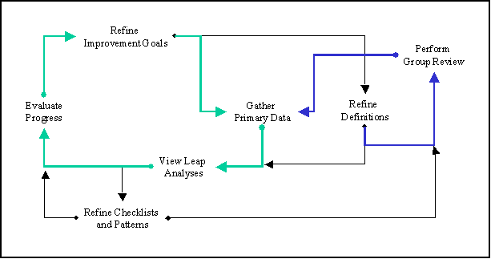
While all of the paths in this figure are important, two paths are highlighted for conceptual clarity. The "green" path represents the personal improvement cycle of technical skill acquisition and improvement, which is augmented by the "blue" path representing group-based review. The following provides a bit more detail on the illustration:
The Leap approach follows earlier formulations for process improvement, such as GQM [Basili84]. It is the attempt to satisfy the Leap constraints in a bottom-up context that produces several differences between the Leap toolkit and other top-down approaches.
Leap is similar in many ways to the Personal Software Process [Humphrey95]. The essential differences between Leap and the PSP are as follows. First, the PSP views automated support as helpful but optional. Leap views automation as essential to reducing the overhead of process data collection and analysis to an acceptable level. Our prior research also indicates that automation may be necessary (though not sufficient) for collection of accurate personal process data [Disney98]. Second, the PSP involves an essentially "heavyweight" orientation toward process definition and adherence: in the PSP, one is instructed to follow quite rigidly defined process scripts which sometimes involve practices quite unfamiliar to most developers (such as to completely code all system definitions before compiling for the first time). Leap allows a more "lightweight" orientation, in which one can begin collecting and analyzing data without a great deal of process definition, adding such definitions incrementally when deemed useful. Third, unlike PSP, Leap integrates support for asynchronous review as an essential service in the toolkit. Fourth, the PSP requires you to collect data on your defects---what you do wrong. In addition to defects, Leap also helps you to collect data on your patterns---what you do right.
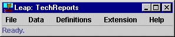
This LeapTool window is what first appears after invoking the toolkit.
Its menus provide access to 14 separate window-based tools and viewers,
plus any drop-in "extensions" provided by third parties.
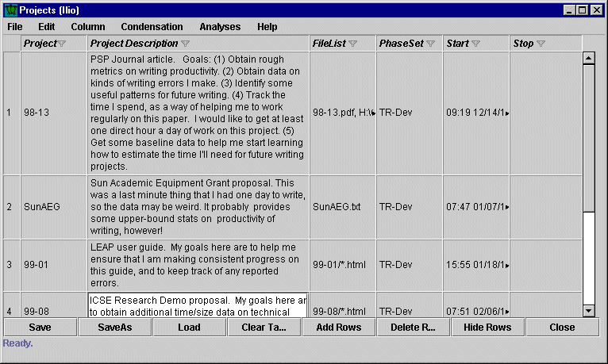
Most Leap data is organized into "projects" which we
recommend to be relatively
short-term (1-3 week) increments of work.
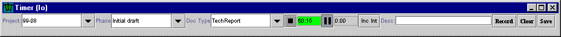
Leap provides a timing tool that allows you to dynamically record the time
you spend on a project.
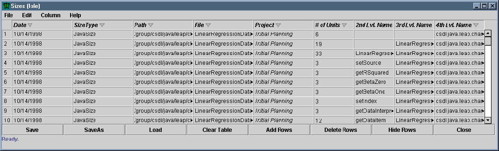
Leap provides a mechanism for recording hierarchical size measurements for
work products. In addition, more than one type of size measure can be
provided for any given work product. (For example, both lines of code and
function point measures might be provided for a code work product.)
To simplify size counting, we provide a specialized size measurement tool
called LOCC
(not shown).
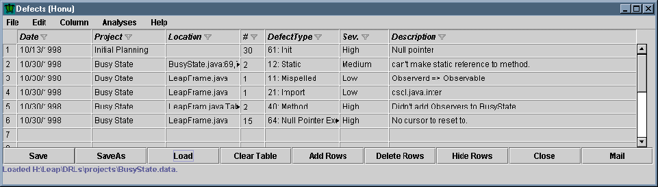
This window shows one tool for recording defect data for use in Leap.
Several fields provide popup menus to facilitate data entry. In addition,
we have developed other tools, such as Defmacs
(not shown), to support defect collection in more specialized contexts and
environments.
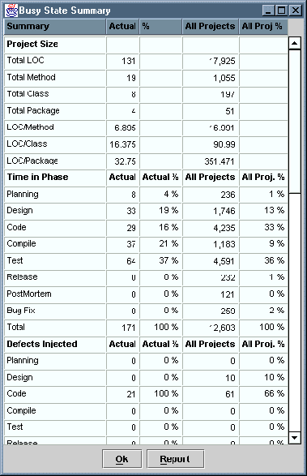
This image shows some of the summary statistics provided by Leap about
projects, which can be calculated at any time during the course of the project.
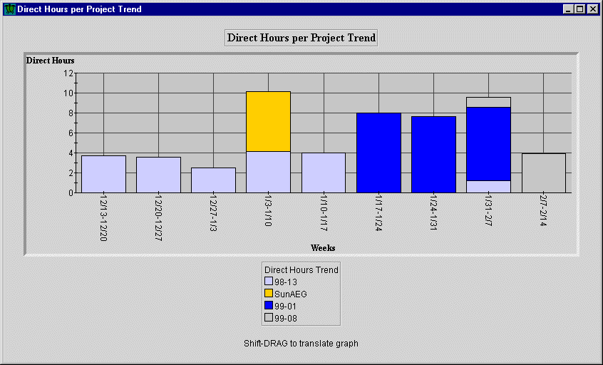
This analysis chart shows the number of direct hours applied to projects at
the grain size of weeks. Leap can also display direct hour trends on
a daily or monthly basis.
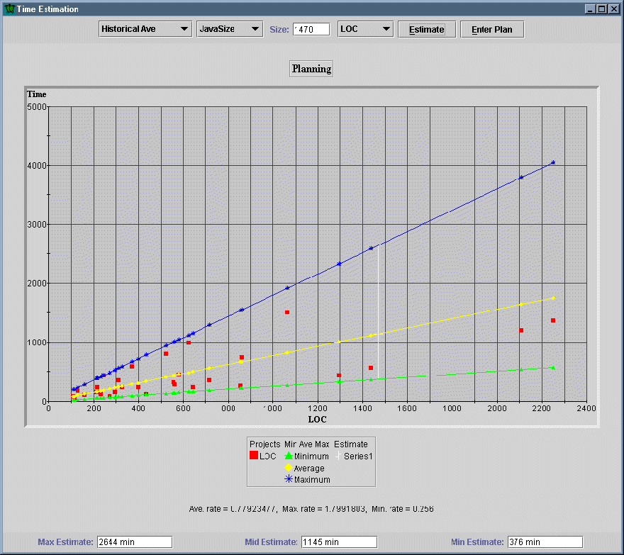
This interactive analysis tool shows a graph of projects with respect
to their size and direct hours of effort. Using simple average/max/min
values, Leap can provide an estimate of the direct hours for a future
project given an estimate of its size. The size measure used can
be configured by the user.
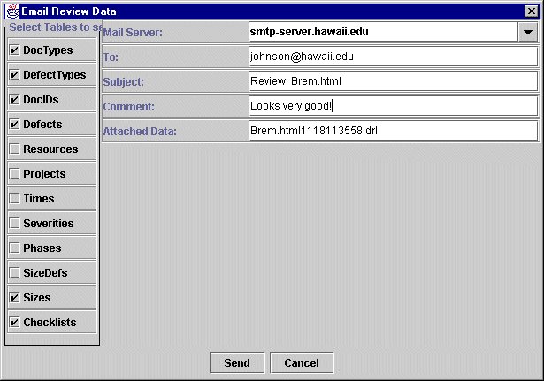
This window illustrates Leap support for distributing review and other
process data. Developers have complete control over which kinds of
data they share with others. Leap also enables developers to download
Leap data files directly from the Internet by entering an URL.
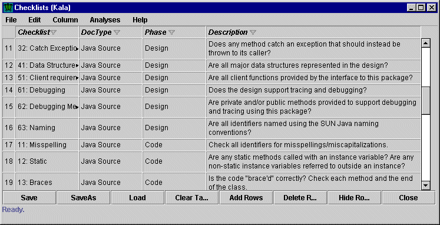
This final screen shot illustrates how Leap represents checklists.
It is possible to note with each defect whether a checklist was
used to find it, and thus determine the effectiveness of various
checklist items over time.